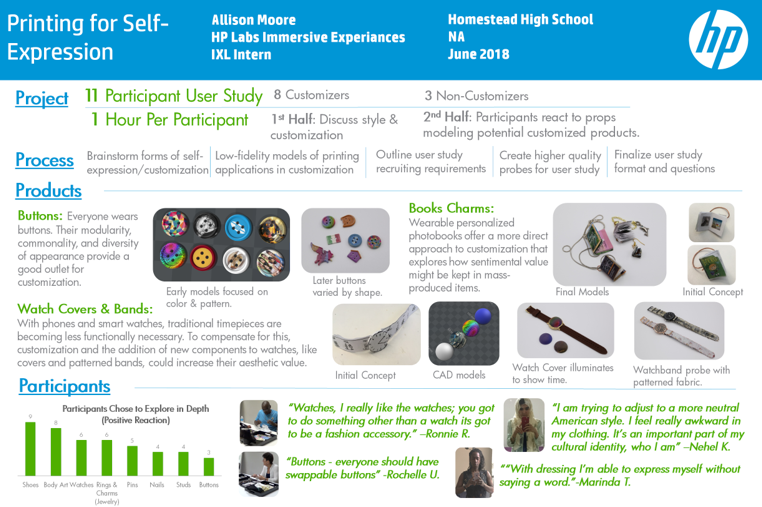

HP Labs
In 2017, I interned with the Immersive Experiences Lab (IXL) to study the applications of 3D printing and customization in clothing. Over the summer, I developed prototype customizable objects and conducted a qualitative study on user reactions. I also worked independently on a project exploring the idea of comfort/nonverbal communication through wearable technology.
IDEATION
LOW-FIDELITY MODELS
CONSUMER STUDIES
CLOSE
Ideation and Case Studies
Conducted several case studies to investigate how individuals used existing clothing options/customization to express themselves.
CLOSE
Low-Fidelity Models
Created Mock-Ups of customizable printed clothing concepts based on case studies.
CLOSE

Consumer Study
Refined Low-Fidelity models into custom printed buttons, watches, and jewelry used in a user study to measure participant reactions to printed and 3D printed customizable fashion.
STUDY PROTOTYPES
▽
▽


FINAL RESULTS
▽
▽
